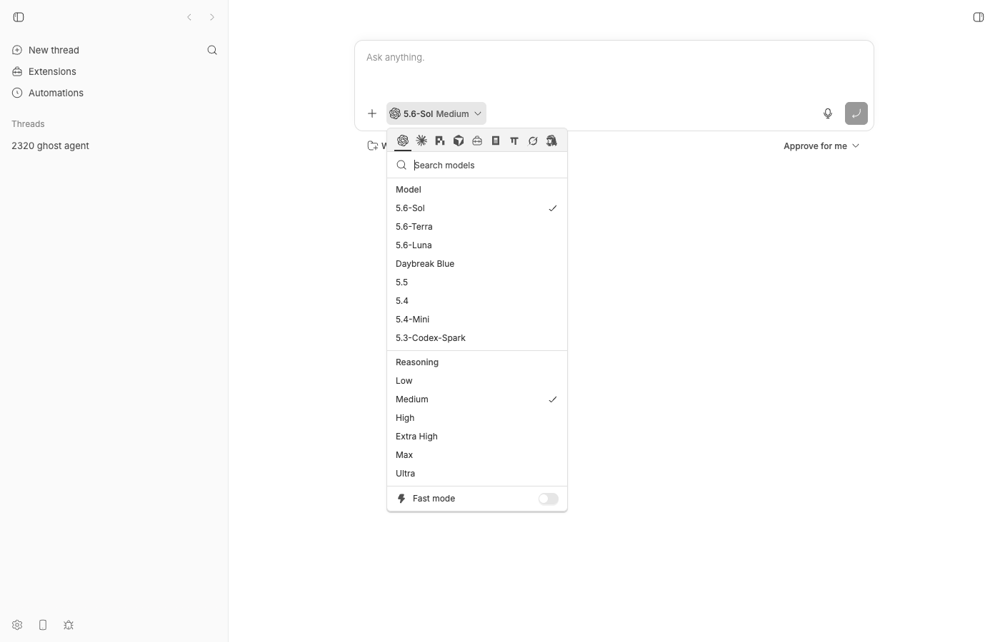
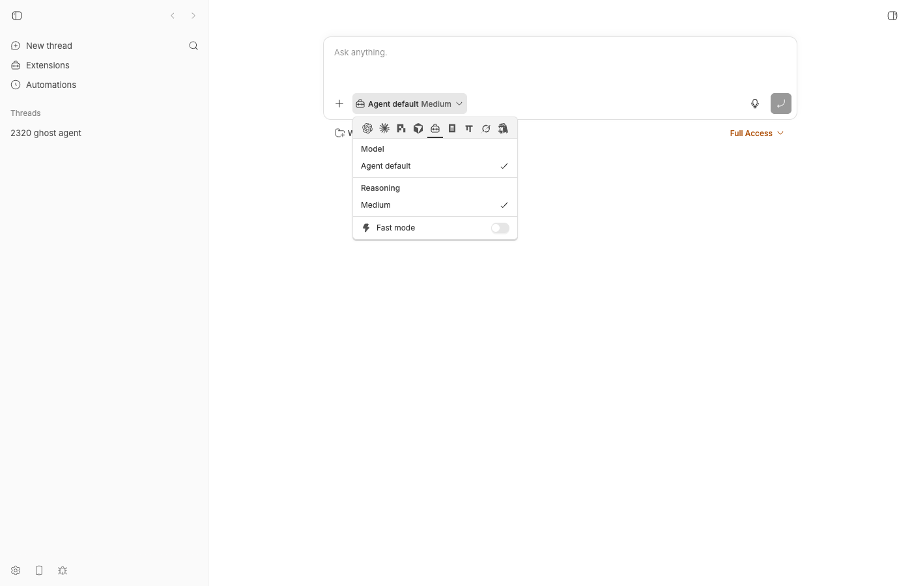
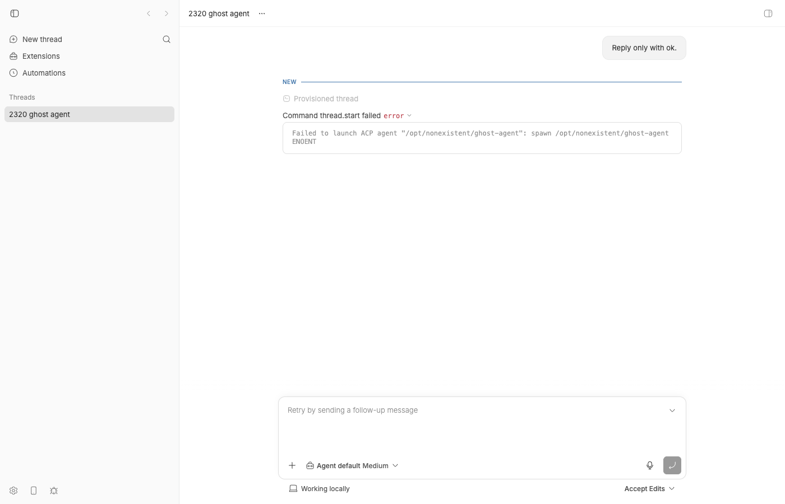

#2320 · Custom ACP providers report available on hosts that cannot execute them
Verdict: REPRODUCED · Root-cause confidence: high
1. TL;DR
A user can register their own ACP agent ("custom agent") in the ACP providers plugin's customAgents setting. bb then lists that agent as an available provider for every host, in every provider list, the composer picker, bb provider list --machine X, the SDK, and workflow selection validation, without ever asking the target host whether the configured command exists there. bb's own shipped ACP agents (opencode, omp, grok, hermes) are handled correctly: they are declared visibility: "installed" and the server sends a provider.health probe to the target host and drops the ones the host reports not_installed. A custom agent is hard-coded to visibility: "always" in the plugin, so it skips that probe entirely. The consequence is that a thread (or workflow agent call) targeting such a host is created, provisioned, and only then dies at thread.start with missing_executable ("spawn … ENOENT"). The host-side machinery to answer the question already exists and works: the ACP bridge's provider/health answers not_installed for the same custom agent when asked through /api/v1/system/providers/state.
2. Claims vs findings
| Claim from the issue | Status | Evidence |
|---|---|---|
BB builds every custom ACP ProviderInfo with available: true. | Verified | available is a plugin-load fact, not a host fact: plugin-runtime.ts passes available: true for every provider of a loaded plugin and false only for a plugin that failed to load (§5). GET /system/providers?hostId=… returned acp-ghost … available: true on a host where the command does not exist (03-api-providers.json). |
| Globally configured agents are appended after resolving the target host, without probing whether that host can execute the command. | Verified | Custom agents register with visibility: "always" (plugins/provider-acp/src/agents.ts:174), which puts them in listConfiguredSystemProviderInfos; only visibility: "installed" registrations go through the per-host provider.health probe in listInstalledPluginProviderInfos. Repro test: on a host whose bridge reports everything not_installed, acp-opencode is probed and omitted, acp-ghost is never probed and stays listed (vitest output). |
packages/config/src/bb-app-managed-config.ts:116-144 stores one global command with no host selector. | Stale reference (behavior still true) | At the base commit that schema is the deprecated customAcpAgents config array (read by plugins/provider-acp/src/legacy-config.ts). The primary store is now the plugin's customAgents setting (plugins/provider-acp/server.ts). Both are global, neither has a host selector. docs/configuration.md:364 even states: "A configured agent's command is local code execution and only works with a co-located daemon." |
apps/server/src/services/providers/acp-provider-tier.ts:93-117 constructs dynamic ACP providers as available. | Stale reference | The file was deleted before the base commit by #2325 ("Delete the dynamic ACP tier", merged 2026-08-24 04:34 UTC; the issue was filed 2026-08-23 21:38 UTC against the older tree). The replacement path (customAcpAgentDefinition → acpProviderDeclaration → buildPluginProviderRegistration) has the same behavior. |
execution-options.ts:102-137,234-253 resolves a host but appends the global custom agents without a host execution probe. | Verified (lines moved) | Now listConfiguredSystemProviderInfos (L109-121) + listSystemProviderInfosForHost (L215-223). Same behavior. |
execution-options.test.ts:651-687,946-1006 codifies listing the custom provider without a usable target-host proof. | Verified (lines moved) | "keeps always-visible and custom providers when installed-only provider status returns 502/504" (L578-680) asserts exactly 4 provider.health requests (the four installed-only shipped agents) while acp-example-agent is expected in the list — i.e. the custom agent is asserted to be listed without a probe. |
| Native pickers and workflow resolution advertise the provider on a host where its executable does not exist. | Verified | Composer picker shows "Ghost Agent" with model "Agent default" and lets the user submit (screenshot). plugins/workflows/src/service.ts:622-632 validates candidate.available from the same list, so a workflow would pass validation and fail at thread start. |
| Selection should fail before thread creation with a host-specific reason. | Verified as not happening | bb thread spawn --provider acp-ghost returned a thread (thr_iewed85627, status starting), a personal workspace was provisioned, then thread.start failed with missing_executable (timeline, screenshot). |
{kind=link}
{kind=link}
3. Environment
- bb
494f66526913557ab076e048218236f0a6610927(main, 2026-08-24), own worktree;origin/mainchecked at21cb6b68b. - macOS 26.5.2 (Darwin 25.5.0, Apple Silicon), Node v22.23.1, pnpm, turbo 2.8.3. codex-cli 0.149.1 (not used for the repro; no real model turns were run).
- Dev instance (
scripts/bb-dev-app current): Apphttp://localhost:16232, Serverhttp://localhost:24232, host daemon127.0.0.1:32232, data dir~/.bb-dev/bb-machines-HOST.getbb.app-checkouts-bb-.claude-worktrees-wf_846839f8-f8a-46-8d2e8930f11b(deleted at cleanup). One enrolled host:host_7janzifbhf. - All shipped ACP CLIs happen to be installed on this Mac (opencode, omp, hermes, grok, cursor-agent), so the installed-only omission path is shown in the unit test rather than live. The live repro uses a custom agent whose command is a path that does not exist on the only host, which exercises exactly the code path the issue describes (no probe at all).
4. Minimal reproduction
4a. Live (CLI + API), single host, command that does not exist on it
- Start a dev instance and point the CLI at it:
scripts/bb-dev-app current eval "$(scripts/bb-dev-app env)" # BB_SERVER_URL=http://localhost:24232 … pnpm bb:dev machine list --json # -> host_7janzifbhf (connected)
- Register a custom ACP agent whose command cannot exist on the host:
pnpm bb:dev plugin config provider-acp set customAgents \ '[{"id":"ghost","displayName":"Ghost Agent","command":"/opt/nonexistent/ghost-agent","args":["acp"]}]'Server log:[plugin:provider-acp] Registered 1 configured ACP agent(s). - Ask for the providers of that host. Expected:
acp-ghostomitted oravailable: false. Actual:$ pnpm bb:dev provider list --machine host_7janzifbhf ID Name codex Codex claude-code Claude Code pi Pi acp-cursor Cursor acp-ghost Ghost Agent <-- listed acp-opencode opencode … $ curl -s 'http://localhost:24232/api/v1/system/providers?hostId=host_7janzifbhf' | jq '.[] | select(.id=="acp-ghost") | {id,available}' { "id": "acp-ghost", "available": true } - The same host does know the answer when asked through the readiness route (this proves the daemon/bridge side already works):
$ curl -s 'http://localhost:24232/api/v1/system/providers/state?hostId=host_7janzifbhf' | jq '.providers[] | select(.providerId=="acp-ghost")' { "providerId": "acp-ghost", "displayName": "Ghost Agent", "status": "not_installed", … } - Execution options (what the picker and workflows consume) report a selectable model and no load error:
$ curl -s 'http://localhost:24232/api/v1/system/execution-options?hostId=host_7janzifbhf&providerId=acp-ghost' { "providers": [ …, {"id":"acp-ghost","available":true}, … ], "models": [ {"id":"acp-default","displayName":"Agent default", …} ], "modelLoadError": null } - Create a thread with it. Expected: rejected before creation with a host-specific reason. Actual: the thread is created and provisioned, then fails at start:
$ pnpm bb:dev thread spawn --project proj_personal --provider acp-ghost --permission-mode accept-edits \ --title "2320 ghost agent" --prompt "Reply only with ok." --json { "id": "thr_iewed85627", "providerId": "acp-ghost", "status": "starting", … } # exit 0 $ sleep 8; pnpm bb:dev thread show thr_iewed85627 --json | jq .thread.status "error" # timeline row (09-thread-timeline.json): "title": "Command thread.start failed", "detail": "Failed to launch ACP agent \"/opt/nonexistent/ghost-agent\": spawn /opt/nonexistent/ghost-agent ENOENT" # server log (08-dev-log-excerpt.txt): WARN: [server] Live thread start command failed {"threadId":"thr_iewed85627"} "code": "missing_executable", "status": 502, "retryable": false



4b. Unit-level, two hosts (fails on the base commit)
File: 2320/repro/execution-options-2320.test.ts (placed at apps/server/test/system/execution-options-2320.test.ts; run with cd apps/server && pnpm exec vitest run test/system/execution-options-2320.test.ts). Host A's bridge says every ACP agent is installed; host B's bridge says none is. The shipped installed-only agent acp-opencode is probed on both and omitted on B; the custom acp-ghost is never probed on B and remains listed.
/**
* Repro for get-bb/bb#2320: a user-configured ("custom") ACP agent is listed
* as `available: true` for ANY target host, and the server never asks that
* host whether the agent's command exists there. A shipped installed-only
* agent (opencode, omp, grok, hermes) IS probed via `provider.health` and
* omitted when the host answers `not_installed`.
*/
import { describe, expect, it } from "vitest";
import {
listSystemProviderInfos,
resolveSystemExecutionOptions,
} from "../../src/services/system/execution-options.js";
import { registerHostRpcResponder } from "../helpers/host-rpc.js";
import { seedHostSession } from "../helpers/seed.js";
import { withTestHarness } from "../helpers/test-app.js";
import { configuredAcpProvider } from "../helpers/provider-registry.js";
const GHOST_AGENT_SETTING = {
id: "ghost",
displayName: "Ghost Agent",
command: "/opt/nonexistent/ghost-agent",
args: ["acp"],
};
function health(installed: boolean) {
return {
supported: true as const,
health: {
status: installed ? ("ready" as const) : ("not_installed" as const),
statusMessage: null, accountEmail: null, planLabel: null,
installedVersion: null, minimumSupportedVersion: null,
canInstall: false, canUpdate: false, loginCommand: null,
},
};
}
describe("#2320 custom ACP provider availability per host", () => {
it("omits a custom ACP agent on the host whose bridge reports it not installed, like a shipped installed-only agent", async () => {
await withTestHarness(
{ extraProviders: [await configuredAcpProvider(GHOST_AGENT_SETTING)] },
async (harness) => {
const a = seedHostSession(harness.deps, { id: "host-2320-a" });
const responderA = registerHostRpcResponder(harness, {
hostId: a.host.id, sessionId: a.session.id,
handle: (request) => {
if (request.command.type !== "provider.health") throw new Error(`Unexpected RPC ${request.command.type}`);
return { ok: true, result: health(true) };
},
});
const b = seedHostSession(harness.deps, { id: "host-2320-b" });
const responderB = registerHostRpcResponder(harness, {
hostId: b.host.id, sessionId: b.session.id,
handle: (request) => {
if (request.command.type !== "provider.health") throw new Error(`Unexpected RPC ${request.command.type}`);
return { ok: true, result: health(false) };
},
});
const onA = await listSystemProviderInfos(harness.deps, { hostId: a.host.id });
const onB = await listSystemProviderInfos(harness.deps, { hostId: b.host.id });
const idsA = onA.map((p) => p.id);
const idsB = onB.map((p) => p.id);
expect(idsA).toContain("acp-opencode");
expect(idsA).toContain("acp-ghost");
expect(idsB).not.toContain("acp-opencode"); // shipped agent: correctly omitted
const probedOnB = responderB.requests
.filter((r) => r.command.type === "provider.health")
.map((r) => (r.command.type === "provider.health" ? r.command.providerId : ""));
expect(probedOnB).toContain("acp-opencode");
expect(probedOnB).toContain("acp-ghost"); // FAILS on 494f66526
expect(onB.find((p) => p.id === "acp-ghost")).toBeUndefined(); // FAILS on 494f66526
expect(responderA.requests.some((r) => r.command.type === "provider.health" && r.command.providerId === "acp-opencode")).toBe(true);
},
);
});
it("execution-options for the custom agent on the bare host reports it available with a usable model", async () => {
/* documents current behavior: available:true, models:[acp-default], modelLoadError:null — passes on base */
…
});
});
Output on 494f66526 (full log):
FAIL test/system/execution-options-2320.test.ts > #2320 custom ACP provider availability per host
> omits a custom ACP agent on the host whose bridge reports it not installed, like a shipped installed-only agent
AssertionError: expected [ 'acp-opencode', 'acp-omp', …(2) ] to include 'acp-ghost'
❯ test/system/execution-options-2320.test.ts:101:27
Test Files 1 failed (1)
Tests 1 failed | 1 passed (2)
The probed set on host B is exactly the four shipped installed-only agents (acp-opencode, acp-omp, acp-grok, acp-hermes-agent); the custom agent is not in it.
Repro files: 2320/repro/
5. Root cause
Mechanism. Provider listing has two tiers, chosen by the registration's visibility:
"always"→listConfiguredSystemProviderInfos: returned for any host with no host round-trip (execution-options.ts#L109-L121)."installed"→listInstalledPluginProviderInfos: oneprovider.healthRPC to the resolved host per provider; dropped whenhealth.status === "not_installed"(#L161-L223).
The ACP plugin hard-codes every user-configured agent to the first tier (plugins/provider-acp/src/agents.ts#L170-L177):
// A configured agent is the user's own: bb cannot know whether it is
// installed, so it is always listed, and it forks only if it says so.
visibility: "always",
The premise of that comment is wrong at this commit. The ACP bridge's provider/health handler resolves the launch command on PATH for any launch spec, not just shipped ones (provider-maintenance.ts#L161-L175):
export async function getAcpProviderHealth(args) {
…
if ((await resolveExecutablePath(args.command)) === null) {
return healthResult({ maintenance, status: "not_installed" });
}
…and the daemon dispatches provider.health for custom agents exactly as for shipped ones (command-dispatch.ts#L634-L645). That is why GET /system/providers/state?hostId=… correctly says not_installed for acp-ghost while GET /system/providers?hostId=… lists it as available: the two routes share listSystemProviderInfos as the roster, but only the state route asks the host about the always-visible entries.
Why available: true. ProviderInfo.available is set once at registration from whether the owning plugin loaded (plugin-runtime.ts#L1617 passes true; #L1381 passes false only for a plugin that failed to load; projected at plugin-provider-registration.ts#L190). It is a per-process fact, so every consumer that gates on it treats it as a host fact by mistake:
- Thread creation: thread-default-policy.ts#L180-L186 rejects only
!registration.info.available("provider plugin failed to load"); there is no host probe before the thread row, environment and workspace are created. The first host contact for a custom agent isthread.start, which is why the failure surfaces asmissing_executableafter provisioning. - Model resolution does not help either: an ACP agent without
modelClianswersprovider.list_modelswith the syntheticacp-defaultentry without spawning the command (observed:modelLoadError: null), soresolveCatalogExecutionDefaultsinthread-create.tspasses. - Workflows: workflows/src/service.ts#L622-L632 lists providers for
run.environmentIdand checkscandidate.available— same roster, same false positive. - App picker:
useThreadCreationOptionsroutes/system/execution-optionsby environment/host and rendersresponse.providers; the screenshots show the result.
Existing test that locks in the bug. execution-options.test.ts#L578-L680 expects acp-example-agent to be listed while asserting exactly four provider.health requests (the shipped installed-only agents).
Deeper issue. The configuration model is global (one customAgents setting, one deprecated customAcpAgents array; docs/configuration.md:364 says a configured agent "only works with a co-located daemon") while the product lets any thread/workflow pick any enrolled host. The listing tier was chosen to avoid hiding a user's own agent, but bb already has a cheap, already-implemented per-host answer (PATH resolution of the command via the bridge health probe) that it simply does not use for this tier.
6. Proposed fix (first principles)
- Plugin (owner of the declaration): in
plugins/provider-acp/src/agents.tscustomAcpAgentDefinition, declare configured agentsvisibility: "installed"instead of"always". That alone routes them throughlistInstalledPluginProviderInfos, so every consumer oflistSystemProviderInfos/execution-options(CLI, SDK, app picker, workflows, provider states) gets the per-host answer from the existingprovider/healthPATH check, with no new wire shape (noHOST_DAEMON_PROTOCOL_VERSIONbump needed). Update the comment anddocs/configuration.md("listed where the command is on PATH").- Caveat 1: the ACP health probe resolves the bare
commandon the daemon's PATH; an absolute path works (it is the ENOENT case) but a command that depends onenv/cwdfrom the launch spec is not considered.getAcpProviderHealthshould receive the launch spec'senv.PATH/cwdif the plugin wants parity with the real spawn. - Caveat 2: "installed" currently hides the entry entirely when the host is unreachable only on 502/504 (
canOmitProviderDiscoveryForError); when no host can be resolved at all, only always-visible entries are returned (resolveSystemProviderInfosPlanfallback). Custom agents would then disappear from host-less listings, which the test "keeps configured providers and custom models when no host can be resolved" (L682) would need to accept, or the fallback could include installed-only entries withavailable: false. - Caveat 3:
RESERVED_ACP_PROVIDER_IDSis computed from shipped agents' visibility and is unaffected.
- Caveat 1: the ACP health probe resolves the bare
- Server (owner of policy), fail before creation: in
thread-create.ts, after the host is resolved and before persisting the thread, run the same readiness check used bylistInstalledPluginProviderInfosfor installed-only providers (oneprovider.healthRPC, memoized per host/daemon-session like the model list) and throw a 409/422provider_not_installed_on_hostApiError naming the host and provider display name (non-secret: do not echo the command path). This satisfies "selection fails before thread creation with a host-specific reason" for API/CLI/SDK callers that bypass the picker, and makes the workflow plugin's check consistent by construction since it consumes the same list. - Tests: the two-host test above (flip the two marked assertions to pass), plus update
execution-options.test.tsL578-680 to expect five probes (or the custom agent omitted) and the 502/504 fallback semantics chosen in caveat 2.
What could go wrong: per-host probes add one RPC per custom agent per listing (already the cost for four shipped agents, with mapProviderMaintenanceRequests bounding concurrency). A daemon older than the change is unaffected because the RPC already exists.
7. PR review
No open pull request is linked to this issue.
8. Related issues
- #1921 Show dynamically available providers in Settings → Providers (same installed-only listing surface).
- #1388 Known ACP agents on the login-shell PATH are not detected under launchd/systemd (closed) — the PATH resolution the fix would rely on.
- #2291 provider.list_models startup probe logs at warn on every daemon start (same ACP probe machinery).
- #2325 Provider plugins: one API for Codex, Claude Code, pi, and ACP agents — moved the code the issue cites; did not change this behavior.
9. Appendix
Artifacts
01-set-custom-agent.txt—plugin config provider-acp set customAgents …output02-provider-list.txt/.json—bb provider list --machine host_7janzifbhf03-api-providers.json—GET /api/v1/system/providers?hostId=…(id/displayName/available)04-api-provider-states.json—GET /api/v1/system/providers/state?hostId=…(acp-ghost: not_installed)05-api-execution-options.json—GET /api/v1/system/execution-options?hostId=…&providerId=acp-ghost06-thread-spawn.json,07-thread-show.json,09-thread-timeline.json— thread lifecycle08-dev-log-excerpt.txt— server + daemon log around the failed start10-vitest-2320.txt— unit repro output;execution-options-2320.test.tsdoobie-0*.js— browser scripts used for the screenshots
Commands run (in order)
gh issue view 2320 --repo get-bb/bb --json …
git checkout 494f66526 ; git fetch origin main ; git log --oneline 494f66526..origin/main
pnpm install --frozen-lockfile --prefer-offline ; pnpm exec turbo run build
scripts/bb-dev-app current ; scripts/bb-dev-app env
node packages/scripts/dist/commands/run-cli.js machine list --json
node packages/scripts/dist/commands/run-cli.js plugin config provider-acp set customAgents '[{"id":"ghost","displayName":"Ghost Agent","command":"/opt/nonexistent/ghost-agent","args":["acp"]}]'
node packages/scripts/dist/commands/run-cli.js provider list --machine host_7janzifbhf [--json]
curl 'http://localhost:24232/api/v1/system/providers?hostId=host_7janzifbhf'
curl 'http://localhost:24232/api/v1/system/providers/state?hostId=host_7janzifbhf'
curl 'http://localhost:24232/api/v1/system/execution-options?hostId=host_7janzifbhf&providerId=acp-ghost'
node packages/scripts/dist/commands/run-cli.js thread spawn --project proj_personal --provider acp-ghost --permission-mode accept-edits --title "2320 ghost agent" --prompt "Reply only with ok." --json
node packages/scripts/dist/commands/run-cli.js thread show thr_iewed85627 --json
curl 'http://localhost:24232/api/v1/threads/thr_iewed85627/timeline'
cd apps/server && pnpm exec vitest run test/system/execution-options-2320.test.ts
doobie run 2320/repro/doobie-0{1..5}*.js
pnpm dev:stop ; rm -rf ~/.bb-dev/…wf_846839f8-f8a-46-8d2e8930f11b ; lsof -nP -iTCP -sTCP:LISTEN | grep -E '16232|24232|32232'
Server log excerpt
[11:10:53] INFO: [server] [plugin:provider-acp] Registered 1 configured ACP agent(s).
[11:11:34] WARN: [server] Live thread start command failed {"threadId":"thr_iewed85627"}
err: { "type": "ApiError",
"message": "Failed to launch ACP agent \"/opt/nonexistent/ghost-agent\": spawn /opt/nonexistent/ghost-agent ENOENT",
"status": 502, "body": { "code": "missing_executable", "retryable": false } }
[11:11:34] WARN: [host-daemon] online host RPC failed {"serverUrl":"http://127.0.0.1:24232","type":"thread.start"}
err: { "type": "JsonRpcResponseError",
"message": "Failed to launch ACP agent \"/opt/nonexistent/ghost-agent\": spawn /opt/nonexistent/ghost-agent ENOENT" }